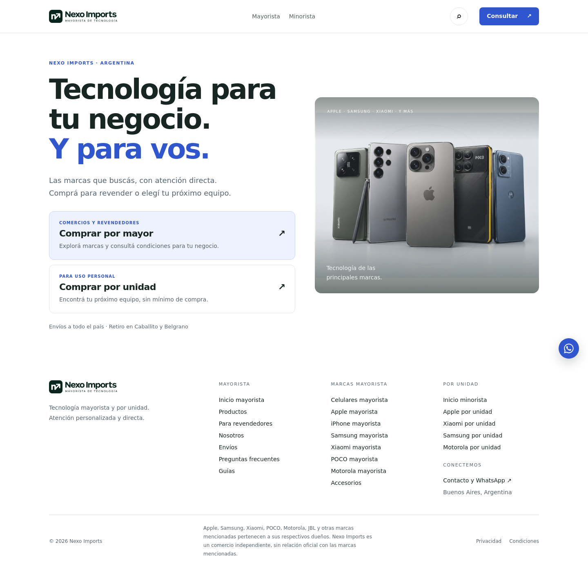

PRODUCT DESIGN · CRO · FRONTEND — 29/09/2026
Una web más clara.
Una consulta más fácil.
Auditoría del proyecto entregado y rediseño implementado. El negocio convierte por WhatsApp: la aplicación no tiene carrito, pago online ni checkout. Por eso se optimizó el recorrido desde la visita hasta una consulta comercial con contexto.
Diagnóstico y cambios
| Prioridad | Hallazgo original | Cambio implementado | Hipótesis de mejora |
|---|
| Alta | La entrada exige elegir público antes de mostrar una oferta. La preferencia guardada redirige automáticamente al volver. | Portada con propuesta de valor, fotografía y dos caminos descriptivos. Se retiró la redirección de la portada. | El visitante entiende qué vende Nexo antes de elegir y conserva control sobre su navegación. |
| Alta | CTAs genéricos: “Hablemos” y “Consultar”. La cabecera minorista enviaba una consulta mayorista. | CTA principal “Consultar mi pedido”, consulta guiada y mensajes contextualizados por sección. | Menos ambigüedad y menos preguntas iniciales para el equipo comercial. |
| Alta | El cliente debe redactar toda la consulta en WhatsApp. | Marca, modelo, cantidad y localidad opcionales; mensaje preparado con precio, disponibilidad, pago, garantía y entrega. | Más consultas con información útil, sin exigir registro ni datos de contacto en la web. |
| Media | Textos de 8–12 px, seis tarjetas por fila y cuatro pasos distribuidos en una grilla de tres columnas. | Textos funcionales mayores, tarjetas en tres columnas, cuatro pasos en escritorio y dos en móvil. | Más facilidad para comparar y comprender la compra. |
| Media | Imágenes de familias cargadas desde terceros; mensajes comerciales no respaldados como “la marca más pedida”. | Se usan imágenes locales del ZIP, una composición tipográfica para Samsung y un ícono vectorial para accesorios, con descripciones concretas, sin presentar imágenes como stock confirmado. | Menos dependencia externa y una comunicación más confiable. |
| Media | Marquesina animada, secciones repetitivas, pie extenso e Instagram sin configurar visible. | Se retiró la marquesina, se acortó la portada mayorista y el pie, y se ocultó el texto “agregar link”. | Menos distracciones durante el recorrido comercial. |
Criterios del rediseño
Fondo blanco, superficies suaves, un acento azul y espacio para distinguir oferta, navegación y acción. La secuencia mayorista queda: propuesta → marcas → proceso → consulta → confianza → preguntas. Los elementos de confianza utilizan información presente en el proyecto: atención directa, retiro en Caballito y Belgrano y envíos nacionales.
Los gatillos de compra son claridad del próximo paso, relevancia por público, facilidad de consulta y reducción de incertidumbre. No se añadieron descuentos, escasez, testimonios, plazos ni garantías inventadas. La decisión de compra sigue siendo comercial, con condiciones confirmadas por WhatsApp.
Cómo evaluar si vende más
No hay analítica ni resultados de ventas en el archivo recibido. Las mejoras de conversión son hipótesis: el rediseño por sí solo no demuestra un aumento de ventas. No se instaló ningún servicio de seguimiento externo.
| Métrica | Definición | Uso |
|---|
| Intención de consulta | Sesiones con clic hacia WhatsApp ÷ sesiones elegibles. | Comparar por público, página y dispositivo. Un clic no prueba que se envió un mensaje. |
| Consulta recibida | Conversaciones comerciales recibidas y atribuibles ÷ sesiones elegibles. | Validar en WhatsApp/CRM; requiere atribución comercial y control de duplicados. |
| Calidad de consulta | Consultas con marca/modelo/cantidad suficientes para cotizar ÷ consultas recibidas. | Evaluar si el formulario reduce el trabajo comercial. |
| Conversión a venta | Pedidos pagados ÷ consultas comerciales recibidas. | Verificar el resultado final, junto con ingreso y margen. |
Experimento recomendado: comparar CTA directo a WhatsApp frente a consulta guiada opcional, manteniendo una vía directa visible. Definir por adelantado la métrica principal y el tamaño de muestra a partir del tráfico y la tasa actuales; no elegir un ganador sólo por unos días de variación. Revisar también tiempo de respuesta y abandono comercial después de cotizar.
Validación y límites
- Lint, TypeScript, pruebas del catálogo, generación estática y chequeo SEO en modo preview.
- Revisión de rutas principales a 1440, 390 y 320 px; imágenes, desbordamiento horizontal, errores de JavaScript, menú móvil y acordeón.
- Comprobación del mensaje guiado y del mensaje minorista. No se enviaron mensajes ni se realizaron compras.
- Las rutas comerciales y legales se conservaron. Se corrigieron comprobaciones antiguas que esperaban URLs anteriores al prefijo /mayorista.
- El dominio real no está configurado: la salida permanece en noindex, como establece el proyecto. La indexación de producción y el rendimiento en el hosting final requieren verificación después de configurar el dominio.
- La revisión es del proyecto proporcionado, sin datos de usuarios, métricas reales, CRM ni validación de las condiciones comerciales del negocio.
Qué incluye la entrega
Código Nuxt editable, dist/ con la versión estática, review/ con capturas y evidencias de validación, y esta auditoría. Abrí la versión estática mediante un servidor HTTP; el doble clic sobre index.html no reproduce correctamente las rutas y scripts.
Vista de la portada

Ver portada mayorista en escritorio · Ver portada mayorista en móvil